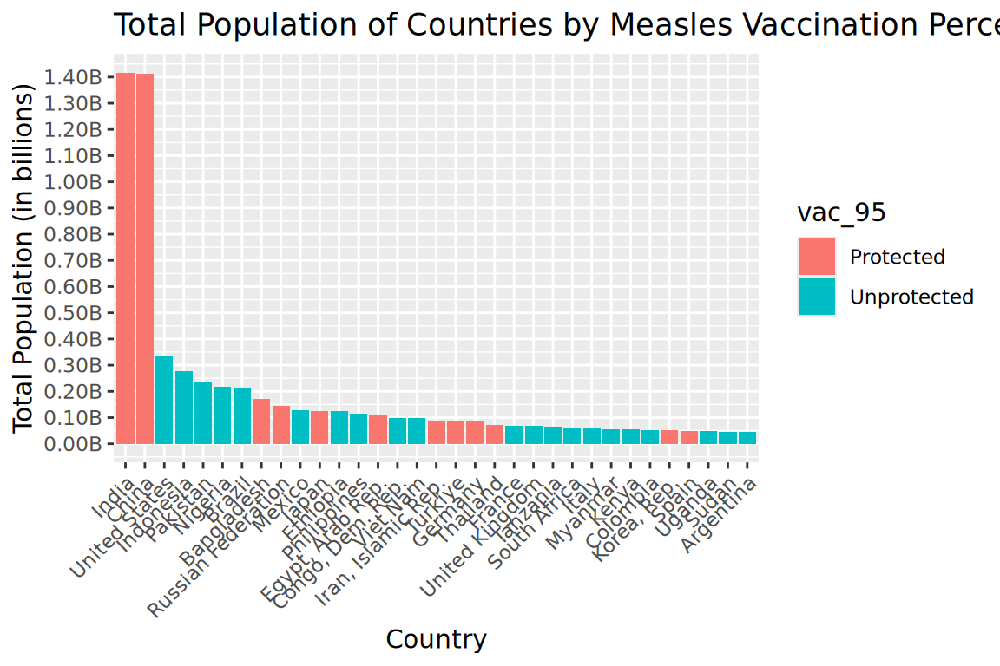
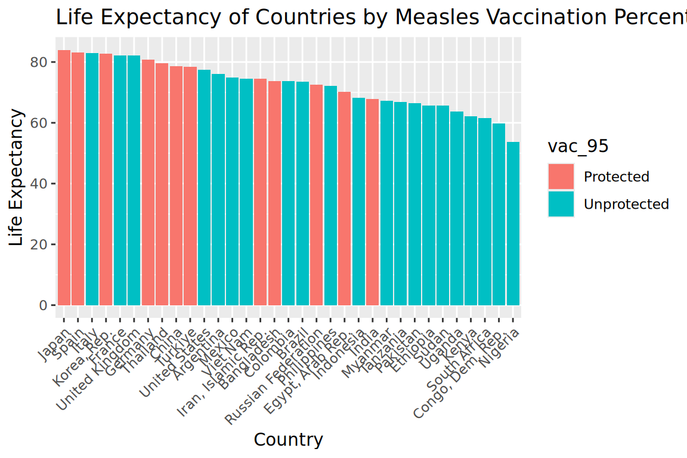
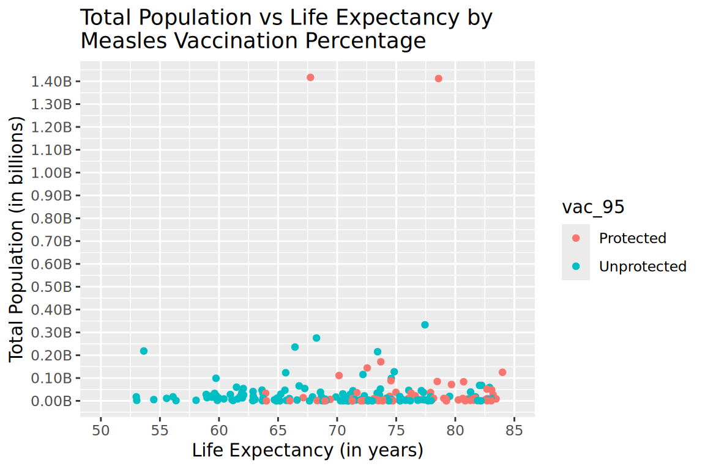

Exploratory Data Analysis of the World Development Indicators dataset
Author
Emma Jinright
Published
February 26, 2025
Introduction
This exploratory data analysis focuses on analyzing a few of the variables from the World Development Indicators dataset for 2022 made available by the World Bank (“World Development Indicators” 2022). First, I will download the dataset, display the first five rows, and look at the structure of the variables in the dataset.
Code
wdi <-read_csv("./wdi.csv")
Rows: 217 Columns: 14
── Column specification ────────────────────────────────────────────────────────
Delimiter: ","
chr (1): country
dbl (13): inflation_rate, exports_gdp_share, gdp_growth_rate, gdp_per_capita...
ℹ Use `spec()` to retrieve the full column specification for this data.
ℹ Specify the column types or set `show_col_types = FALSE` to quiet this message.
Code
head(wdi, 5)
# A tibble: 5 × 14
country inflation_rate exports_gdp_share gdp_growth_rate gdp_per_capita
<chr> <dbl> <dbl> <dbl> <dbl>
1 Afghanistan NA 18.4 -6.24 353.
2 Albania 6.73 37.4 4.86 6810.
3 Algeria 9.27 31.4 3.60 5023.
4 American Samoa NA 47.0 1.74 19673.
5 Andorra NA NA 9.56 42351.
# ℹ 9 more variables: adult_literacy_rate <dbl>,
# primary_school_enrolment_rate <dbl>, education_expenditure_gdp_share <dbl>,
# measles_immunisation_rate <dbl>, health_expenditure_gdp_share <dbl>,
# income_inequality <dbl>, unemployment_rate <dbl>, life_expectancy <dbl>,
# total_population <dbl>
Code
str(wdi)
spc_tbl_ [217 × 14] (S3: spec_tbl_df/tbl_df/tbl/data.frame)
$ country : chr [1:217] "Afghanistan" "Albania" "Algeria" "American Samoa" ...
$ inflation_rate : num [1:217] NA 6.73 9.27 NA NA ...
$ exports_gdp_share : num [1:217] 18.4 37.4 31.4 47 NA ...
$ gdp_growth_rate : num [1:217] -6.24 4.86 3.6 1.74 9.56 ...
$ gdp_per_capita : num [1:217] 353 6810 5023 19673 42351 ...
$ adult_literacy_rate : num [1:217] NA 98.5 NA NA NA ...
$ primary_school_enrolment_rate : num [1:217] NA 95.6 108.3 NA 90.1 ...
$ education_expenditure_gdp_share: num [1:217] NA 2.75 NA NA 2.67 ...
$ measles_immunisation_rate : num [1:217] 68 86 79 NA 98 37 99 83 95 NA ...
$ health_expenditure_gdp_share : num [1:217] NA NA NA NA NA NA NA NA NA NA ...
$ income_inequality : num [1:217] NA NA NA NA NA NA NA 40.7 27.9 NA ...
$ unemployment_rate : num [1:217] 14.1 11.6 12.4 NA NA ...
$ life_expectancy : num [1:217] 62.9 76.8 77.1 NA NA ...
$ total_population : num [1:217] 41128771 2777689 44903225 44273 79824 ...
- attr(*, "spec")=
.. cols(
.. country = col_character(),
.. inflation_rate = col_double(),
.. exports_gdp_share = col_double(),
.. gdp_growth_rate = col_double(),
.. gdp_per_capita = col_double(),
.. adult_literacy_rate = col_double(),
.. primary_school_enrolment_rate = col_double(),
.. education_expenditure_gdp_share = col_double(),
.. measles_immunisation_rate = col_double(),
.. health_expenditure_gdp_share = col_double(),
.. income_inequality = col_double(),
.. unemployment_rate = col_double(),
.. life_expectancy = col_double(),
.. total_population = col_double()
.. )
- attr(*, "problems")=<externalptr>
Here we can see that this dataset contains information on 217 countries and includes 14 variables: country, inflation_rate, exports_gdp_share, gdp_growth_rate, gdp_per_capita, adult_literacy_rate, primary_school_enrolment_rate, education_expenditure_gdp_share, measles_immunisation_rate, health_expenditure_gpd_share, income_inequality, unemployment_rate, life_expectancy, and total_population. Additionally, by default, the dataset is arranged alphabetically by country name.
Exploratory Data Analysis
For the exploratory data analysis, I will be focusing on the variables of total_population, life expectancy, and measles_immunisation_rate.
Total Population
The first variable I will be looking at is total_population.
# A tibble: 5 × 2
country total_population
<chr> <dbl>
1 India 1417173173
2 China 1412175000
3 United States 333271411
4 Indonesia 275501339
5 Pakistan 235824862
Code
tail(wdi_pop_rank, 5)
# A tibble: 5 × 2
country total_population
<chr> <dbl>
1 St. Martin (French part) 31791
2 British Virgin Islands 31305
3 Palau 18055
4 Nauru 12668
5 Tuvalu 11312
Here, we can see that the average population per country is 3.6536448^{7} with a standard deviation of 1.4105826^{8} people. Additionally, we can see that India has the largest population in 2022 with China, the United States, Indonesia, and Pakistan rounding out the top five respectively. On the lower end, Tuvalu had the smallest population in 2022 with Nauru, Palau, the British Virgin Islands, and the French part of St. Martin rounding out the bottom five respectively.
Life Expectancy
The next variable I will analyze is life_expectancy.
# A tibble: 5 × 2
country life_expectancy
<chr> <dbl>
1 Macao SAR, China 85.4
2 Liechtenstein 84.3
3 Japan 84.0
4 Hong Kong SAR, China 83.7
5 French Polynesia 83.6
Code
tail(wdi_life_rank, 5)
# A tibble: 5 × 2
country life_expectancy
<chr> <dbl>
1 South Sudan 55.6
2 Central African Republic 54.5
3 Nigeria 53.6
4 Lesotho 53.0
5 Chad 53.0
Here, we see that the average life expectancy across all countries is 72.4165186 years with a standard deviation of 7.7133223. Macao had the highest life expectancy in 2022 with Liechtenstein, Japan, Hong Kong, and French Polynesia not far behind. On the other end, Chad had the lowest life expectancy in 2022 with the other bottom five countries being Lesotho, Nigeria, Central African Republic, an South Sudan.
Measles Immunization Rate
The final variable I will be analyzing is the measles_immunisation_rate variable. This variable represents the percentage of the population age 12 to 23 months that is vaccinated against measles.
Above, we can see that the average measles immunization rate across the world is 83.855% with a standard deviation of 15.996%. The countries with the highest measles vaccination rates in 2022 were Antigua and Barbuda, Bahrain, China, Cuba, and Fiji. The countries with the lowest measles vaccination rates in 2022 were the Democratic People’s Republic of Korea (North Korea), Montenegro, Angola, Syrian Arab Republic, and the Central African Republic. I thought it was odd that North Korea had a reported measles immunization rate of 0%. After some research, it appears this is likely a typo in the dataset as data by WHO and UNICEF reported that North Korea had a measles immunization rate of 67% in 2022(“World Development Indicators” 2022).
Additionally, out of the 193 countries had information regarding measles immunization rates, only 65 of these countries have reached an immunization rate of at least 95%. According to the United States’ Center for Disease Control and Prevention (CDC), a vaccination rate of 95% of both doses of the measles vaccine means that the population is protected from outbreaks (“About Global Measles”). This means that 33.679% of countries have measles immunization rate of at least 95%.
Plots
Next, I will visualize the variables I discussed above. I will begin with looking at total population for each country and their measles vaccination rate.

Figure 1: This is a bar graph displaying the total population for each country in the top 15% of populations by measles immunization rate (Source: “World Development Indicators” (2022)).
Above, I have created Figure 1, a graph of the countries that have a population in the top 15% of the world in order to make the bar chart easier to view. This then shows each of those countries’ total population in billions and whether or not they have achieved a measles vaccination rate of at least 95% or not. It does not appear that total population is related to measles vaccination rate for the countries in the top 15% of total population. It did surprise me to find out that the United States was not at 95% vaccination rate for children age 12 to 23 months in 2022. After some research, I found that kindergarten vaccination rates were above 95% during the 2019 to 2020 school year, but during the 2023-2024 school year dropped back below 95% (“Measles Cases and Outbreaks” 2025). This is due to more parents being wary of vaccines.
Next, I will look at life expectancy and measles vaccination rate.

Figure 2: This is a bar graph displaying the life expectancy for each country in the top 15% of populations by measles immunization rate (Source: “World Development Indicators” (2022)).
This is Figure 2. This graph is of the countries that have a population in the top 15% of the world in order to make the bar chart easier to view. This then shows each of those countries’ life expectancy and whether or not they have achieved a measles vaccination rate of at least 95% or not. For countries that have a total population within the top 15%, it appears that more countries that do not have a measles vaccination rate of at least 95% have lower life expectancies, although this is just based off visuals and may not be true for the rest of the countries with smaller total populations.
Lastly, I will visualize a scatterplot of total population and life expectancy by measles vaccination rates.

Figure 3: This is a scatter plot showing the relationship between total population and life expectancy by measles immunization rate (Source: “World Development Indicators” (2022)).
In Figure 3, you can see the total population of each country in billions vs the country’s life expectancy by whether or not they are protected against measles defined as having at least a 95% measles vaccination rate. It is interesting to see that although some countries who are unprotected against measles do have high life expectancies, no country that has at least a 95% vaccination rate against measles has a life expectancy lower than approximately 64 years.
Table
Table 1: Population and Life Expectancy of Countries by Protection Against Measles
Is the Population Protected Against Measles?
Average Population
Population Standard Deviation
Average Life Expectancy
Life Expectancy Standard Deviation
Protected
67,689,380
248,669,884
76.32
5.26
Unprotected
28,959,171
53,609,898
69.27
7.51
Above, in Table 1, you can see the breakdown of population and life expectancy by whether or not the country has reached the 95% vaccination rate needed to be protected against measles. The average population for unprotected countries is lower but both average populations have a large standard deviation. Additionally, the unprotected countries have a lower life expectancy than protected countries although these overlap when you consider the average life expectancy within one standard deviation.
Conclusions
Overall, this exploratory data analysis gave a good overview of statistics surrounding total population, life expectancy, and measles immunization rates for countries in 2022. Future steps would include regression analysis to determine the significance of the relationships described above.